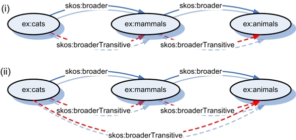
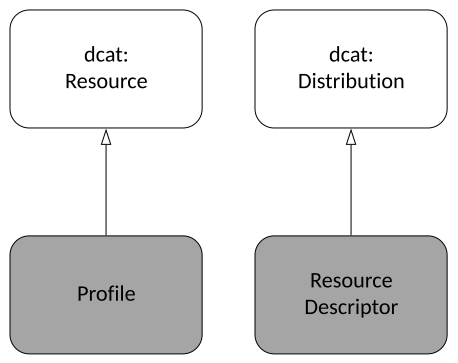
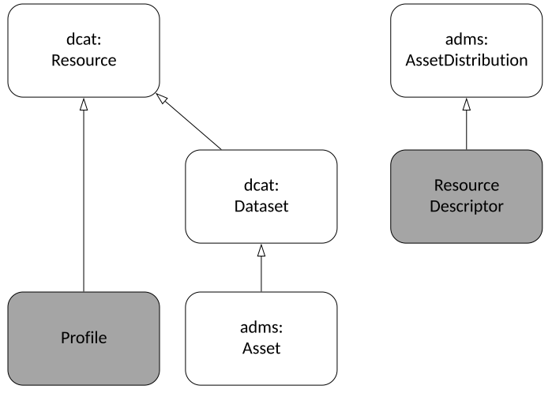
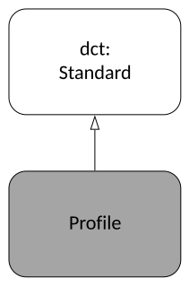
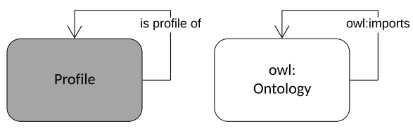

The Profiles Vocabulary is an RDF vocabulary created to allow the machine-readable description of profiles of
specifications for information resources. It can be used to describe profile hierarchies wherein profiles of
specifications may themselves have profiles indicated. It can also link multiple profile resources that make up a
profile
- guidelines, validation tools, schemas, term lists and so on - to it and allows for those profile resources to be
described with formats, roles, and digital artifacts.
The namespace for PROF terms is http://www.w3.org/ns/dx/prof/.
The PROF vocabulary, defined in OWL and encoded in RDF Turtle, is available at prof.ttl.
Status of This Document
This section describes the status of this document at the time of its publication. Other documents may
supersede this document. A list of current W3C publications and
the latest revision of this technical report can be found in the W3C technical reports index at https://www.w3.org/TR/.
Publication as a Working Group Note does not imply endorsement by the
W3C Membership. This is a draft document and may be updated,
replaced or
obsoleted by other documents at any time. It is inappropriate to cite this
document as other than work in progress.
This document was produced by a group
operating under the
W3C Patent
Policy.
This document is one from a set of documents on profiles, edited by the W3C Dataset Exchange Working Group (DXWG) and the Internet
Engineering Taskforce (IETF). The documents are:
[DX-PROF] this document, an RDF vocabulary that describes profiles and related resources
[DX-PROF-CONNEG] specific guidance on how to negotiate for Internet resource content using profiles
[DX-PROF-IETF] -
Indicating and Negotiating Profiles in HTTP: an IETFInternet-Draft defining HTTP Headers for HTTP content
negotiation by profile
The DXWG also plans to provide [DX-PROF-GUIDANCE] - Profile Guidance: general
recommendations and guidance on profiling.
1. Introduction
This section is non-normative.
This Profiles Vocabulary (PROF) provides a standardized, structured and human- & machine-readable set of terms
to describe profiles. Its development was triggered by the appearance of multiple profiles of the Dataset Catalog
Vocabulary (DCAT) [VOCAB-DCAT] and examples of profile description and implementation guidance
systems such as
the Guidelines for Dublin Core Application Profiles [DCAP] and the
OpenGeospatial Consortium's Standard for
Modular specifications [MODSPEC].
Profiles aim to increase interoperability within a community of users by introducing constraints, extensions or
combinations on the use of more general specifications. PROF is an RDF vocabulary created
to describe relations between specifications and profiles and the profile resources that define and implement
profiles. A specification is "A basis for comparison; a reference point against which other things
can be evaluated." (see the definition below) and a profile, perhaps an
application profile, is defined as "A [data/application] specification that constrains, extends,
combines,
or provides guidance or explanation about the usage of other [data/application] specifications". Profile resources
may be human-readable documents (PDFs, textual documents), vocabularies, schemas or ontologies (XSD, RDF),
constraint language resources used by specific validation tools (SHACL, ShEx, Schematron), or any other files or
profile resources that support the profile. In this specification, each profile resource is able to have roles
assigned to it that define its functions within the profile.
This vocabulary's ontological basis for specification/profile relations is a specialization of the
dct:Standard
class which is defined here as a prof:Profile. A
prof:Profile
instance is related to either dct:Standard or prof:Profile instances by being a
profile of
them, formally, prof:isProfileOf. Resources that
conform to either a
dct:Standard or a prof:Profile are formally described as doing so with the use of the
dct:conformsTo
predicate.
Data that conforms to a profile, in PROF, must conform to anything the profile is a profile of. To represent this
formally, this vocabulary
includes the property chain axiom
dct:conformsTo owl:propertyChainAxiom ( prof:isProfileOf dct:conformsTo ).
Individual communities may define what conformance to their profiles and the things they profile means and how to
test for conformance if indeed they wish to.
In recognition of the existence of specifications and profiles that are made up of multiple resources –
perhaps PDF documents, machine-readable constraint language files, code lists etc. – this vocabulary also
provides for the description of the parts that constitute a profile or a specification. It defines a
prof:ResourceDescriptor class which is used to
qualify the
relationship between a profile and profile resources. A prof:Profile may have any number of
prof:hasResource predicates indicating
prof:ResourceDescriptor
instances which then indicate the location (a URI) of the actual profile resource artifact with a
prof:hasArtifact predicate and then may describes the
artifact's
format and any specifications it conforms to with dct:format
&
dct:conformsTo predicates respectively. The role that
the profile resource
plays with respect to the profile may be indicating using a prof:ResourceRole
class instance linked to it with the prof:hasRole
predicate.
A vocabulary of prof:ResourceRole instances is provided in § 9. Resource Role Instances but
communities are encouraged to create additional prof:ResourceRole instances with definitions suited
to
their purposes and, in the best case, to publish those additional instances for others to reuse.
2. Conformance
As well as sections marked as non-normative, all authoring guidelines,
diagrams, examples, and notes in this specification are non-normative.
Everything else in this specification is normative.
The key word MAY in this document
is to be interpreted as described in
BCP 14
[RFC2119]
[RFC8174]
when, and only when, they appear
in all capitals, as shown here.
For the purpose of compliance, the normative sections of this document are:
All diagrams in this specification, apart from Figure
4, use elements defined in this key.
The namespace prefixes in the key are defined in § 4. Namespaces.
Figure 1 A key of the elements used in this
specification's diagrams
3. Definitions
specification
A basis for comparison; a reference point against which other things can be evaluated.
Source: DCMI Metadata Terms [DCTERMS]'s definition for a
Standard.
data specification
A specification, with
human- and/or machine-processable representations, that defines the content and structure of data used in a
given context.
data
profile
A data specification that constrains, extends, combines, or provides guidance or explanation about the usage
of other data specifications.
This definition includes what are sometimes called "application profiles", "metadata application profiles", or
"metadata profiles". In this document, "data profile" and these other variants are all referred to as just
"profiles".
data resource
An entity is identified by a URI. Familiar examples include an electronic document, an image, a source of
information with a consistent purpose. [RFC3986]
metadata
Information that is supplied about a resource. [RFC3986]
token
A short name identifying something.
In the context of this specification, it is a profile that is usually identified by a token.
4. Namespaces
The namespace for PROF is
http://www.w3.org/ns/dx/prof/,
however, PROF makes use of terms from other vocabularies, in particular Dublin Core [DCTERMS].
PROF itself only defines a small set of classes and properties of its own.
PROF also makes use of derivative namespaces of its own namespace for auxiliary vocabulary elements, such as
instances
of the prof:ResourceRole which are within the http://www.w3.org/ns/dx/prof/role/
namespace.
A full set of namespaces and prefixes used in this specification is given in the table below.
All other namespace prefixes are used in examples only.
In particular, IRIs starting with "http://example.org" represent some application-dependent IRI [RFC3987]
5. Motivation
This section is non-normative.
Until this vocabulary's creation, there was no formal W3C method
for describing profile objects
(Internet resources).
There are a multitude of possible ways to describe the components needed to define a profile and support
validation of data
claiming conformance to profiles, such as:
machine readable constraint languages (e.g. the abstract (Dublin Core's Description Set Profiles [DCDSP]) or
the more concrete (SHACL [SHACL] & ShEx [SHEX]).
Describing the components within a profile with documents or constraint languages only does not indicate many
things
that may be important or interesting to know about a profile such as:
its dependence on standards or other profiles
inheritance of profile information from the things being profiled, or
related profile resources
guidance documents in addition to formal constraints
equivalent constraints written in different constraint languages for different forms of profile resource,
e.g. SHACL
for RDF and Schematron [SCHEMATRON] for XML.
supporting vocabularies of terms (code lists)
Regarding profile/specification relations, a mechanism to relate profiles to specifications and other profiles,
would allow both immediate knowledge of what things a profile profiles and also allow profile hierarchies to be
established
which could:
assist with the reuse of existing profiles
one can profile another profile, adding a small set of additional constraints and declaring compatibility
with all profiled specifications.
reducing the total effort and information necessary to specify a profile
allow for machine interpretation of profiles and automated profile negotiation with fallback options
if a client requests a profile which a server cannot deliver, a server may be able to instead deliver a more
generic version of the requested data resource, using a profile link to the thing it profiles
a client may be able to generate a request that already indicates acceptable fallback options for data
resources
when the primary requested profile is unavailable
5.1 Motivating Requirements
For the purposes of dataset exchange and with the lack of a formal W3C method for describing the objects related
to profiles, the DXWG undertook a process of Use Case and Requirements gathering. They established the
Dataset Exchange Use Case and Requirements document
(the UCR document) [DCAT-UCR] which
groups requirements for profiles into the following sections:
PROF addresses many of those Requirements – those that can be addressed by describing
profile components and relations – and those Requirements link back to the Use
Cases that motivated them.
Here several RDF vocabularies related to PROF are described as well as non-RDF initiatives and models.
6.1 Web Ontology Language (OWL)
OWL [OWL2-OVERVIEW] is an RDF-based ontology language that provides for the
description of classes, properties,
individuals, and data values which are stored as Semantic Web documents. PROF uses many OWL properties, classes
and structures and is easily recognized as a specialized OWL ontology.
Regarding profiling, none of the various OWL (or the updated OWL2) specifications directly address profiling, as
it's understood here, however OWL does include "ontology properties" that "can be used to associate information
with an ontology" [owl2-rdf-based-semantics] (§ 3.5 Ontology Annotations).
In particular, the ontology and annotation property owl:imports allows an ontology to indicate that
it imports other ontology[ies] "in order to gain access to their entities, expressions, and axioms,
thus providing the basic facility for ontology modularization" (§ 3.4 Imports).
Within OWL, the definition of owl:imports is not associated with any axioms that permit reasoning
with
it and it is mostly used by ontology editing software to
manipulate ontology data by importing it from remote (online) locations, as a technical convenience mechanism.
Since an ontology that imports another includes all the axioms of the imported ontology, data which conforms to
an
ontology x will necessarily conform to any ontology that x imports too.
When using OWL (and RDF [RDF11-CONCEPTS] & RDF
Schema [RDF-SCHEMA]) it is
possible to know, on a per-class or property basis, that data elements conform to particular
ontologies through inspection of those elements. Data that uses OWL
declares classes and properties as being of types – particular classes or properties – by using
rdf:type – :myNewClassInstance rdf:type ex:SomeExistingClass – which claims the data
conforms to the indicated class or property. Newly declared classes and properties in ontologies may also claim
conformance
to existing classes or properties by using rdfs:subClassOf or rdfs:subPropertyOf
respectively.
6.2 Data Catalog Vocabulary (DCAT)
DCAT was originally published as a W3C Recommendation in 2014
[VOCAB-DCAT] and has now been revised by the DXWG
[VOCAB-DCAT-2]. The revised version is backward-compatible with the
original and the intention of the vocabulary
– to facilitate interoperability between data catalogs published on the Web – is unchanged.
Original and revised DCAT allow for the descriptions of dcat:Catalog instances which contain
dcat:Dataset instances which may be distributed – delivered in a specific form –
as dcat:Distribution instances.
PROF borrows its main structures from DCAT in that PROF's prof:Profile &
prof:ResourceDescriptor
classes parallel DCAT's dcat:Dataset & dcat:Distribution classes.
The main subject that differentiates PROF from DCAT is that PROF specifically addresses the notion of
conformance
– of profiles to specifications or other
profiles – about which DCAT is silent. DCAT
does address the notion of instance data conforming to an "established standard" (see it's suggested use of the
dct:conformsTo
property
and here – instance data conformance to specifications – DCAT and PROF offer compatible instructions.
No normative alignment between DCAT & PROF is presented in this document however they can and should be used
together and informative alignment between them (with revised DCAT [VOCAB-DCAT-2]) is given in
§ 13.1 Dataset Catalogue
Vocabulary.
6.3 Asset Description Metadata
Schema (ADMS)
ADMS [VOCAB-ADMS] is "a profile of DCAT, used to describe semantic
assets" and, as such, follows DCAT's structures
with many class alignments including adms:Asset & adms:AssetDistribution classes
which parallel DCAT's dcat:Dataset & dcat:Distribution classes.
ADMS has been specifically designed for documenting an "asset", not only to make it discoverable, but also to
provide contextual information (e.g., who's the publisher, which versions of an asset exist, etc.) and does not
specifically address the core motivating notion for PROF of relating to conformance between profiles and
specifications or profiles. In this regard, the relation of PROF to ADMS is similar to that of PROF to DCAT:
there
is some overlap with respect to class structures and the recommended use of particular annotation properties
– title, description, etc. – for class instances.
As with DCAT, PROF can and should be used with ADMS however no normative alignment between them is presented
here
but an informative alignment is given in § 13.2 Asset Description Metadata Schema.
6.4 PROV-O: The PROV Ontology
PROV-O [PROV-O] is an ontology that "provides a set of classes, properties, and
restrictions that can be used
to represent and interchange provenance information". Further: "It can also be specialized to create new classes
and properties to model provenance information for different applications and domains.".
PROV-O is concerned with derivation of things from other things (prov:Entitys from
prov:Entitys), usage/generation of things by events (prov:Entitys from
prov:Activitys), attribution of things to things with agency (prov:Entitys to
prov:Agents) and the association of events with things with agency and these concerns are presented
as a series of "Starting Point classes and properties" with many "Expanded and qualified classes and properties"
that can be used to specialise their use.
PROV-O does not address notions of conformance – of data to specifications/profiles or specifications/
profiles to other specifications/profiles – however the DXWG debated whether prof:isProfileOf
could be considered a sub-property of PROV-O's prov:wasDerivedFrom (see discussion within
DXWG's Issue 485). The outcome of that discussion was that
DXWG felt that since prov:wasDerivedFrom doesn’t say anything about dependency but that
prof:isProfileOf does, it would be of no value to make an rdfs:subPropertyOf assertion
between the two properties. Moreover, prof:isProfileOf's dependency assertion is seen as conceptual
rather than axiomatic so it would be difficult to define an axiom that could be true in a wide variety of cases.
6.5 The VoID Vocabulary
"VoID is an RDF Schema vocabulary for expressing metadata about RDF datasets." [VOID]. It provides for the
describing of partitioned datasets and links between datasets. It is able to do this since, unlike DCAT (and
ADMS),
it caters for datasets only, not datasets in general, and thus is able to know about dataset's structure (as RDF
triples) and therefore how to describe parts within datasets.
VoID also allows for indications of how one RDF dataset uses uses one or more RDFS vocabularies or OWL
ontologies. For example, a dataset may indicate the most important, not necessarily all, of the vocabularies it
uses with the void:vocabulary predicate with the used vocabulary's namespaces URI as the object
value.
This is similar to OWL's [OWL2-PRIMER]
owl:imports in that this is an annotation property and does
not make any strong axiomatic claim.
VoID does not address dependence or conformance of data resource on or to other data
resources.
6.6 Vocabulary of a Friend (VOAF)
[VOAF] provides elements allowing for the description of vocabularies
(RDFS vocabularies or OWL ontologies) and,
in particular, "provides properties expressing the different ways such vocabularies can rely on, extend,
specify,
annotate or otherwise link to each other.".
VOAF declares a voaf:Vocabulary class for identifying RDF vocabularies in order to associate its
properties with them and also makes references to datasets that use vocabulary data. It uses VoID's
void:Dataset
class to identify datasets and voaf:Vocabulary is declared as being a sub class of it.
VOAF includes a series of predicates to indicate specific relationships between vocabularies and those related
to
profiling-like activities are given in the table below.
Property
Description
voaf:reliesOn
Indicates that the subject vocabulary uses or extends some class or property of the object vocabulary
voaf:usedBy
Indicates that the subject vocabulary is used by the object vocabulary
voaf:extends
Indicates that the subject vocabulary extends the expressivity of the object vocabulary by declaring
subsumption relationships, using object vocabulary class as domain or range of a subject vocabulary
property, defining local restrictions etc
voaf:specializes
Indicates that the subject vocabulary defines some subclasses or subproperties of the object vocabulary,
or local restrictions on those
voaf:generalizes
Indicates that the subject vocabulary generalizes by some superclasses or superproperties the object
vocabulary.
voaf:hasEquivalencesWith
Indicates that the subject vocabulary declares some equivalent classes or properties with the object
vocabulary
voaf:hasDisjunctionsWith
Indicates that the subject vocabulary declares some disjunct classes with the object vocabulary.
voaf:similar
Used to assert that two vocabularies are similar in scope and objectives, independently of the fact that
they otherwise refer to each other
This issue was created in the Profiles
Ontology document and is listed in it. Once consensus on addressing it is reached here in comments
below, the results will be added to the document and the issue closed.
Refer to OGC Modular Specification policy [[modspec]] and related work in ISO TC/211 [[cfg-mgmt]].
These specifications define how dependencies between 'standards' can be handled in a manageable way.
6.8 Constraint Languages
Constraint languages such as [SHACL], [SHEX], [SCHEMATRON] and the [DCDSP] defined rules for validating
the conformance of instance data against sets of conditions.
Constraint Languages are frequently used in profile definitions – see § 10. Examples –
but they may not be all that is needed for a complete definition: frequently profiles also include guidance
documents, examples of use and other profile resources too.
PROF does include the possibility of defining profile parts via instances of the
prof:ResourceDescriptor
class with roles via the prof:hasRole property. Using these, profiles may indicate constraint
language profile resources with an appropriate role, such as "constraints" or "validation". The list of
prof:ResourceRoles instances given in § 9. Resource Role Instances may be extended by PROF users
if appropriate roles for their constraint language resource are not found.
PROF does not define any new constraint languages or indicate particular languages for use; this is left to
individual communities to determine.
Figure 2 OWL [OWL2-OVERVIEW] overview diagram of this vocabulary
This vocabulary is for describing relationships between standards/specifications, profiles of them and supporting
artifacts such as validating resources.
The model takes the
dct:Standard
Class as a starting point and defines a specialization, a Profile, which is a
dct:Standard that profiles a dct:Standard or another Profile.
Standardss or Profiles can have Resource Descriptors associated with
them that define rules for implementation, provide guidance on how to implement, or play some other role.
Resource Descriptors must indicate the role they
play (to guide, to validate etc.), the formalism they adhere to
(dct:format)
and any dct:Standard that they themselves conform to
(dct:conformsTo).
Any rdfs:ResourceMAY indicate conformance to a profile as per
Example 2
by using dct:conformsTo. Individual communities MAY determine
what constitutes an appropriate URI to
identify a profile.
The remainder of this section is informative.
7.1 Initial Examples
The example below illustrates the use of most parts of PROF and indicates how non-PROF profile metadata is
stored alongside PROF metadata.
Figure 3
A full example profile described using common metadata and the Profiles Vocabulary
Example 1: A full example described using PROF in RDF (turtle)
@prefix dct: <http://purl.org/dc/terms/> .
@prefix prof: <http://www.w3.org/ns/dx/prof/> .
@prefix role: <http://www.w3.org/ns/dx/prof/role/> .
@prefix rdfs: <http://www.w3.org/2000/01/rdf-schema#> .
<http://example.org/profile/x> # a Profile; it's identifying URI
a prof:Profile ;
# common metadata for the Profile
# the Profile's label
rdfs:label "Profile X" ;
# regular metadata, a basic description of the Profile
rdfs:comment """This is a Profile of Dublin Core Terms used to describe items in
CSIRO's publications catalogue."""@en ;
# regular metadata, URI of publisher
dct:publisher <http://catalogue.linked.data.gov.au/org/O-000886> ;
# PROF metadata
# this is a profile of Dublin Core Terms, referenced by its namespace
prof:isProfileOf <http://purl.org/dc/terms/> ;
# this profile has a SHACL profile resource that constrains it's use of Dublin Core
prof:hasResource [
a prof:ResourceDescriptor ;
# it's in Turtle format
dct:format <https://w3id.org/mediatype/text/turtle> ;
# it conforms to SHACL, here refered to by its namespace URI as a Profile
dct:conformsTo <https://www.w3.org/TR/shacl/> ;
# this profile resource plays the role of "Validation"
# described in this ontology's accompanying Roles vocabulary
prof:hasRole role:Validation ;
# this profile resource's actual file
prof:hasArtifact <http://example.org/profile/x/resource/validator.ttl>
] ;
# other profile resources this profile contains
prof:hasResource ... ;
# a short code to refer to the Profile with when a URI can't be used
prof:hasToken "profx"
.
The following example demonstrates how data resources can indicate conformance to a profile. Note that in
Example 1, there is also an example of
this pattern whereby the ResourceDescriptor
is indicated as conforming to the [SHACL] specification, which is
also understood to be a profile to which
things may conform.
Example 2: An example demonstrating how data resources can indicate conformance to
profiles.
# Profile X
<http://example.org/profile/x> a prof:Profile ;
dct:title "Profile X" .
# A data resource indicating conformance to Profile X.
# In this example it's a DCAT Dataset's Distribution
<http://example.org/dataset/001>
a dcat:Dataset ;
dcat:distribution :dataset-001-x .
:dataset-001-x
a dcat:Distribution ;
dct:title "Distribution of imaginary dataset 001 that conforms to Profile X" ;
dcat:downloadURL <http://www.example.org/files/001.x> ;
dct:conformsTo <http://example.org/profile/x> .
This next example shows how a conclusion about conformance can be drawn due to this vocabulary's inclusion of a
property chain axiom about conformance.
Example 3: Demonstrating conformance via the vocabulary's dct:conformsTo/prof:isProfileOf
property chain.
# Profile X, is a profile of Specification Y
<http://example.org/profile/x> a prof:Profile ;
prof:isProfileOf <http://example.org/specification/y>
dct:title "Profile X" .
# A data resource indicating conformance to Profile X is given
<http://example.org/resource/a>
dct:conformsTo <http://example.org/profile/x> .
# Due to the property chain axiom:
# dct:conformsTo owl:propertyChainAxiom ( prof:isProfileOf dct:conformsTo )
# the data resource above can be inferred to conform to Specification Y
<http://example.org/resource/a>
dct:conformsTo <http://example.org/specification/y> . # this triple is inferred
7.2 Roles Vocabulary
A starting point vocabulary of Resource Role instances that is expected to be extended by
implementers of PROF to suite specialised needs is provided within this vocabulary in
§ 9. Resource Role
Instances.
8. Vocabulary Specification
8.1 RDF representation
The PROF vocabulary is available in RDF via the vocabulary namespace
(https://www.w3.org/ns/dx/prof/). Alongside the
primary artifact, there is
a set of other RDF files that provide additional information, including:
alignments to other vocabularies, some of which are normative, and others which are for guidance only
additional axioms, which can be useful in some contexts
The Profile class "may be used to model aspects of data structure and content (as per profile) or any other
declared behaviour where a base specification can be identified and further requirements asserted.
A specification for which this Profile defines constraints, extensions, or which it uses in
combination with other specifications, or provides guidance or explanation about its usage
A Profile may define constraints on the usage of one or more specifications. All constraints of these
specifications are inherited, in the sense that an object conforming to a profile conforms to all the
constraints specified the targets of prof:isProfileOf relations. This property is optional, allowing
any specification to be declared at the root of a profile hierarchy using the Profile class.
Note that the axiom within this vocabulary that allows the inference that conformance to a profile
means conformance to anything it profiles is part of the definition
§ 8.4.2 Property: dct:conformsTo.
The use of this prof:isTransitiveProfileOf as a super-property of prof:isProfileOf allows communities
of practice to exploit transitive interpretations of hierarchical network of profiles as they see fit,
while not interfering with the semantics of prof:isProfileOf, which cannot enforce such transitivity.
Intuitively, one can interpret prof:isProfileOf statements as explicitly asserted direct profiling
links, while prof:isTransitiveProfileOf is used to reflect more-general (and possibly indirect)
ancestor relationships.
This is a convenience property that may be used to access all specifications (including other
profiles) that could provide useful information and related resources for the Profile (for example,
for better identifying conformance requirements). This avoids forcing clients to traverse a profile
hierarchy to find all relevant resources. If this property is used, then all such relationships should
be present so a client can safely avoid hierarchy traversal.
Note: Explanation of profiling transitivity
The property prof:isTransitiveProfileOf defined here
performs a role
similar to that of the property skos:broaderTransitive
defined in [SKOS-REFERENCE]. That property "...allows communities of practice to
exploit transitive
interpretations of hierarchical networks..." while freeing the simpler hierarchy property of
skos:broader from having to enforce
transitivity which would prevent broader but non-transitive relationships.
Figure 4.5.2 from [SKOS-PRIMER], reproduced below, illustrates the general principle of
use of
skos:broaderTransitive.

Figure 4
Inferring a transitive hierarchy from asserted skos:broader statements. Dotted arrows represent
statements
inferred from the SKOS data model. Solid arrows represent asserted statements. Reproduction of Figure
4.5.2
in [SKOS-PRIMER]
This vocabulary defines prof:isTransitiveProfileOf
to allow for the
transitive interpretations of hierarchies of Profiles (of other Profiles and Standards) while freeing the
simpler property, prof:isProfileOf from having to enforce
transitivity.
While this vocabulary provides this prof:isProfileOf &
prof:isTransitiveProfileOf
pair of properties, it does not specify how a particular implementation of a Profile that is related to
another
Profile or Standard by prof:isTransitiveProfileOf should implement specific inferences.
Inference based on prof:isTransitiveProfileOf will be more complex than inference based on
skos:broaderTransitive due to Profiles being complex objects relative to SKOS Concepts.
# A profile that is within a hierarchy of profiles may wish to indicate it profiles
# things "further up the chain". To do this, prof:isTransitiveProfileOf can be used
# to indicate anything the profile is related to by a series of one or more
# prof:isProfileOf properties.
# Here the New Zealand profile of the ISO addressing standard is presented in a chain
# of profiles:
@prefix dct: <http://purl.org/dc/terms/> .
@prefix prof: <http://www.w3.org/ns/dx/prof/> .
@prefix role: <http://www.w3.org/ns/dx/prof/role/> .
@prefix rdfs: <http://www.w3.org/2000/01/rdf-schema#> .
<http://linked.data.gov.au/def/iso19160-1-address-nz-profile>
a prof:Profile ;
rdfs:label "New Zealand Profile of ISO19160-1" ;
rdfs:comment """This is a country-specific profile of the international
addressing standard, ISO19160-1:2015 (Address)""" ;
prof:isProfileOf <http://linked.data.gov.au/def/iso19160-1-address> .
# The ISO thing that the NZ Profile profiles is actually a Web Ontology Language
# (OWL) version of the original ISO addressing standard
<http://linked.data.gov.au/def/iso19160-1-address>
a prof:Profile ;
rdfs:label "OWL Profile of ISO19160-1" ;
rdfs:comment """This profile profiles both ISO19160-1 (Addressing) and also
the Web Ontology Language (OWL)""" ;
prof:isProfileOf <https://www.iso.org/standard/61710.html> ,
<http://www.w3.org/2002/07/owl#> .
<https://www.iso.org/standard/61710.html>
a dct:Standard ;
rdfs:label "ISO 19160-1:2015 Addressing -- Part 1: Conceptual model" .
# Now, according to the semantics of prof:isTransitiveProfileOf, using the
# prof:isProfileOf statements above, one can infer the following additional
# statements:
<http://linked.data.gov.au/def/iso19160-1-address-nz-profile>
prof:isTransitiveProfileOf <http://linked.data.gov.au/def/iso19160-1-address> ,
<https://www.iso.org/standard/61710.html> ,
<http://www.w3.org/2002/07/owl#> .
# These statements may help consumers understand which broad, well-known
# profiles data they have conforms to when they are presented only with its
# conformance to most specialised (lowest) profile in a hierarchy which they
# may not understand.
# In this example too, a user of the profile
# <http://linked.data.gov.au/def/iso19160-1-address-nz-profile> will also
# understand that data conforming to it is also conformant with OWL which is not
# in the direct hierarchy of addressing standards (iso19160-1-address-nz-profile >
# iso19160-1-address > ISO 19160-1:2015) but is critical to know about when using
# the specialised standard as it can indicate reasoning possibilities.
A simple lexical form of identifier that may be accepted in some circumstances, such as API arguments
or in content negotiation, to reference a profile. This is a “preferred term”, since alternative
identifiers may be declared and used by any implementation
A resource that defines an aspect - a particular part or feature - of a Profile
Usage note:
Used to indicate the formalism (via dct:format) and any adherence to a dct:Standard (via dct:conformsTo)
to allow for machine mediation as well as its purpose via relation to a ResourceRole (via hasRole)
This property is to be used to show conformance of a data resource to a specification
(dct:Standard)
or a profile (prof:Profile).
The property chain axiom declared for this property means that if the thing conformed to is a profile
of
something else (indicated by prof:isProfileOf), then the conforming data resource will be
inferred to be conformant to that other thing too.
PROF does not specify the nature of conformance: communities using specifications and
profiles
are free to define appropriate conformance for their purposes.
The property chain axiom
dct:conformsTo owl:propertyChainAxiom ( prof:isProfileOf dct:conformsTo ) ; is a "feature at
risk" until discussion about its inclusion in PROF has reached a conclusion.
8.4.3 Property: dct:format
This property's details are from the [DCTERMS] specification.
A set of common roles are defined by the Profiles Vocabulary. These are not exhaustive or disjoint,
and may be extended for situations where finer-grained description of purpose is necessary. A profile
resource may perform multiple roles
This property is created for the convenience of clients. When profile describers wish to allow clients
to discover all profile resources relevant to a Profile without having to navigating an inheritance
hierarchy of prof:profileOf relations, this predicate may be used to directly associate inherited
Profile Descriptors with the Profile. If this property is present, it should be used consistently and
all relevant profile resources a client may need to utilise the profile should be present and described
using this predicate
Proposal: replace isInhertiedFrom with a more general property that allows any
ResourceDescriptor to directly indicate the Profile that defines the
ResourceRole of this resource.
This is a spin-off from #642. The example provided there uses the property
prof:inheritedFrom between a Resource Descriptor and a Profile.
As @kcoyle noted, all of the requirements related to inheritance all
speak of profile inheritance. From the draft profiles guidance document: "2..4 Profile inheritance
[RPFINHER] Profiles may add to or specialise clauses from one or more base specifications. Such profiles
inherit all the constraints from base specifications."
In addition we have this, which I think may also refer to resources rather than profiles:
"2.3 Profile of profiles [RPFPP] One can create a profile of profiles, with elements potentially inherited
on several levels."
We've talked a lot about 'profile inheritance' and prof:isInheritedFrom may be about something slightly
different (maybe a "consequence" of profile inheritance, but for the resources that embody these profiles).
NB: this issue is part of a wider discussion on profile inheritance (#748, #795 , #842, maybe #800, and 769), and we should try to avoid putting
everything of that discussion into it!!!
To illustrate the use of prof:isInheritedFrom, the following example is given in both pictorial
and code forms.
Figure 6
Property isInheritedFrom in use. Here the prof:ResourceDescriptor instance
Profile Y, Resource Descriptor 2 refers to the same artifact (a constraints file) as
Standard X, Resource Descriptor 1 and it is inherited by Profile Y from
Standard X which Profile Y is a profile of.
# If Standard X, described using PROF, is given as having a Resource
# Descriptor, RD_1, with role "Full Constraints" as follows:
@prefix ex1: <http://example.org/profile1/> .
@prefix ex2: <http://example.org/profile2/> .
@prefix dct: <http://purl.org/dc/terms/> .Property isInheritedFrom in use.
@prefix prof: <http://www.w3.org/ns/dx/prof/> .
@prefix role: <http://www.w3.org/ns/dx/prof/role/> .
# example standard
# with a single resource indicated for this Standard
ex1:Standard_X
a dct:Standard ;
dct:title "Standard X" ;
prof:hasResource ex1:RD_1 .
# Example ResourceDescriptor for Standard X
# * conforms to the ShEx Expression Language
# * in the JSON format
# * used to validate instance data claiming conformance to Standard X
# * the actual file described is ex1:constraints.json
ex1:RD_1
a prof:ResourceDescriptor ;
dct:conformsTo <http://shex.io/shex-semantics-20191008/> ;
dct:format <https://w3id.org/mediatype/application/json> ;
prof:hasRole role:validation ;
prof:hasArtifact ex1:constraints.json .
# then, a profile of Standard X, perhaps Profile Y, may use
# prof:isInheritedFrom to re-use that Resource Descriptor RD_1
ex2:Profile_Y
a prof:Profile ;
dct:title "Profile Y" ;
prof:isProfileOf ex1:Standard_X ; # this is a profile of Standard X
prof:hasResource
[
# Resource Descriptor 2 in diagram
# * inherited from Standard X
# * conforms to SHACL
# * in the Turtle format
# * with an example role Part Constraints - not defined. A changed role from
# the Resource Descriptor's role in relation to Profile_X
# * the actual file described is ex1:constraints.json
a prof:ResourceDescriptor ;
prof:isInheritedFrom ex1:Standard_X ;
dct:conformsTo <https://www.w3.org/TR/shacl/> ;
dct:format <https://w3id.org/mediatype/text/turtle> ;
prof:hasRole ex:partConstraints ;
prof:hasArtifact ex1:constraints.ttl
] ,
[
# Resource Descriptor 3 in diagram. Not inherited from anywhere
# * constraints are Profile Y's on top of Standard X's
# * this is indicate with example Role Extension Constraints
a prof:ResourceDescriptor ;
dct:conformsTo <http://www.w3.org/ns/shacl#> ;
dct:format <https://w3id.org/mediatype/text/turtle> ;
prof:hasRole ex:extensionConstraints ;
prof:hasArtifact ex2:extension_constraints.ttl
] .
The example ResourceRole instances in this document are considered a "feature at risk" until the total list and
definitions for them can be widely agreed to.
If not listed here, ResourceRole instances will be listed in a supplimentary vocabulary to PROF.
Currently PROF roles are
defined in their own namespace, separate from the "base" one for PROF.
In #535 and #536
points have been made for and against having them in separate namespace. But that discussion was mixed with the
discussion on whether they should be documented in the same document as PROF, which is slightly different.
In the end I am not sure there has been a definitive argument for keeping roles in the same namespace. So I
would like the WG to re-examine this.
Maybe to there has been progress on the front of possible W3C registry (such registry was envisioned at one
point as a possible place for a role vocabulary).
In the meantime I think there should be a note acknowledging the issue in the role section of the PROF
spec, asking for commenters to give feedback.
NB: I believe this is not a blocking issue for moving to CR.
Here are a small set of Resource Role instances developed during the creation of this vocabulary. Applications may
choose to extend this list as required with new and specialised Resource Role instances for their purposes.
These instances are both owl:NamedIndividuals and skos:Concepts and have basic SKOS
[SKOS-REFERENCE]
properties.
Note
These Roles are defined within a namespace that is derived from, but separate from, the namespace for PROF.
This namespace is: http://www.w3.org/ns/dx/prof/role/ with the suggested RDF prefix of
role.
This is to allow for them to grow independently from the main vocabulary.
Documents, in human-readable form, how to use the profile
Usage Note:
Many existing profiles treat their human-readable forms (PDF documents etc.) as authoritative. This role
is suggestive of non-authoritativeness. For a role for a human-readable resource that is authoritative,
see Specification.
This section contains a few examples of PROF in use to demonstrate aspects of this vocabulary. While
efforts have been made to ensure they are accurate at the time of this document's publication, they are not to be
considered authoritative; their purpose is only to illustrate this vocabulary's use.
10.1 DCAT-AP
This example showcases this vocabulary's description of parts of an existing, well-known, profile.
DCAT-AP is the widely used European Application Profile of DCAT. DCAT-AP is described in document form
(PDF & DOCX) and a constraints profile resource for instance validation is available, formulated using the
W3C's Shapes
Constraints Language constraints language [SHACL]. An image of the
DCAT-AP model is also provided.
The figure uses elements from this vocabulary to describe part of the DCAT-AP Profile graphically - PDF &
RDF
profile resources only - to simplify the example.
Figure 7
Part of the DCAT-AP Profile described using this ontology. Here two two Resource Descriptors are shown
relating
to the Profile indicating profile resources with "Guidance" and "Constraints" roles.
In words this vocabulary's descriptions of DCAT-AP is:
In RDF (turtle format), DCAT-AP is described using the Profiles Vocabulary, with many properties not listed in
the
summary figure and description above as:
Example 6:
DCAT-AP described using PROF in RDF (turtle)
@prefix dc: <http://purl.org/dc/elements/1.1/> .
@prefix prof: <http://www.w3.org/ns/dx/prof/> .
@prefix role: <http://www.w3.org/ns/dx/prof/role/> .
@prefix rdfs: <http://www.w3.org/2000/01/rdf-schema#> .
<https://joinup.ec.europa.eu/release/dcat-ap-v11>
a prof:Profile ;
prof:hasToken "dcat-ap" ;
rdfs:label "DCAT-AP" ;
rdfs:comment "DCAT Application Profile for data portals in Europe" ;
dc:publisher "European Union" ;
prof:isProfileOf <http://www.w3.org/ns/dcat> ;
# SHACL constraints for the profile, guidance doc in Word & PDF & an image of the profile components
prof:hasResource
# Guidance doc in Word (DOCX)
<https://joinup.ec.europa.eu/rdf_entity/http_e_f_fdata_ceuropa_ceu_fw21_f6f27f059_bf785_b4d7d_bb602_b6448aab73bd5> ,
# Guidance doc in PDF
<https://joinup.ec.europa.eu/rdf_entity/http_e_f_fdata_ceuropa_ceu_fw21_f17e18570_b1d77_b4171_b9df5_bb53cb4f017d4> ,
# profile image (PNG)
<https://joinup.ec.europa.eu/rdf_entity/http_e_f_fdata_ceuropa_ceu_fw21_f1131a208_b92e9_b4427_ba40c_b6c47746cd422> ,
# Constraints in SHACL
<https://joinup.ec.europa.eu/rdf_entity/http_e_f_fdata_ceuropa_ceu_fw21_f016d88c3_ba0b3_b4506_bae4e_b758e7401c096> ;
.
# The DCAT-AP profile itself has profiles: here GeoDCAT-AP v1.0 is given
<https://joinup.ec.europa.eu/release/geodcat-ap-v10>
a prof:Profile ;
rdfs:label "GeoDCAT-AP" ;
prof:isProfileOf <https://joinup.ec.europa.eu/release/dcat-ap-v11> ;
<https://joinup.ec.europa.eu/rdf_entity/http_e_f_fdata_ceuropa_ceu_fw21_f6f27f059_bf785_b4d7d_bb602_b6448aab73bd5>
a prof:ResourceDescriptor;
rdfs:label "DCAT-AP Guidance Document (Word)" ;
dct:format <https://w3id.org/mediatype/application/msword> ;
prof:hasRole role:Guidance ;
.
<https://joinup.ec.europa.eu/rdf_entity/http_e_f_fdata_ceuropa_ceu_fw21_f17e18570_b1d77_b4171_b9df5_bb53cb4f017d4>
a prof:ResourceDescriptor;
rdfs:label "DCAT-AP Guidance Document (PDF)" ;
dct:format <https://w3id.org/mediatype/application/pdf> ;
prof:hasRole role:Guidance ;
.
<https://joinup.ec.europa.eu/rdf_entity/http_e_f_fdata_ceuropa_ceu_fw21_f1131a208_b92e9_b4427_ba40c_b6c47746cd422>
a prof:ResourceDescriptor;
rdfs:label "DCAT-AP Image" ;
dct:format <https://w3id.org/mediatype/image/png> ;
prof:hasRole role:Guidance ;
.
<https://joinup.ec.europa.eu/rdf_entity/http_e_f_fdata_ceuropa_ceu_fw21_f016d88c3_ba0b3_b4506_bae4e_b758e7401c096>
a prof:ResourceDescriptor;
rdfs:label "DCAT-AP Constraints" ;
dct:conformsTo <http://www.w3.org/ns/shacl>; # the namespace for SHACL
dct:format "text/turtle" ;
prof:hasRole role:FullConstraints ;
.
10.2 DCAT-AP hierarchy
This example showcases this vocabulary being used to indicated profiles within a complex hierarchy.
DCAT-AP, a profile of DCAT, has itself been profiled for various European countries, such as Belgium who has
issued DCAT-BE. Additionally, there are several domain profiles of DCAT-AP, such
as
[GeoDCAT-AP] - for describing geospatial datasets,
dataset series and services - and [StatDCAT-AP]
for enhancing interoperability between descriptions of statistical datasets. Further to this, there is even an
Italian profile of GeoDCAT-AP, GeoDCAT-AP_IT.
This profile hierarchy is represented graphically in the figure and RDF (turtle) below.
Figure 8
DCAT-AP and related profiles in a hierarchy. The Profile labelled '?' shows a potential future profile
instance
that profiles both DCAT-BE & StatDCAT-AP.
Example 7:
The GeoDCAT-AP profile hierarchy described using PROF in RDF (turtle)
@prefix prof: <http://www.w3.org/ns/dx/prof/> .
@prefix rdfs: <http://www.w3.org/2000/01/rdf-schema#> .
<http://www.w3.org/ns/dcat>
a dct:Standard ;
<https://joinup.ec.europa.eu/release/dcat-ap-v11>
a prof:Profile ;
rdfs:label "DCAT-AP" ;
prof:isProfileOf <http://www.w3.org/ns/dcat> ;
<http://dcat.be>
a prof:Profile ;
rdfs:label "DCAT-BE" ;
prof:isProfileOf <https://joinup.ec.europa.eu/release/dcat-ap-v11> ;
<https://joinup.ec.europa.eu/release/geodcat-ap-v10>
a prof:Profile ;
rdfs:label "GeoDCAT-AP" ;
prof:isProfileOf <https://joinup.ec.europa.eu/release/dcat-ap-v11> ;
<https://joinup.ec.europa.eu/solution/statdcat-application-profile-data-portals-europ>
a prof:Profile ;
rdfs:label "StatDCAT-AP" ;
prof:isProfileOf <https://joinup.ec.europa.eu/release/dcat-ap-v11> ;
<https://joinup.ec.europa.eu/news/geodcat-apit1>
a prof:Profile ;
rdfs:label "GeoDCAT-AP_IT" ;
prof:isProfileOf <https://joinup.ec.europa.eu/release/geodcat-ap-v10> ;
# an example as per the Figure above, not an existing profile
<http://example.org/profile/questionmark>
a prof:Profile ;
rdfs:label "?" ;
prof:isProfileOf
<https://joinup.ec.europa.eu/solution/statdcat-application-profile-data-portals-europ> ,
<http://dcat.be> .
Since there are no cardinality restrictions on either the property prof:isProfileOf or other
restrictions on the class definition of
prof:Profile that prevent them from being used to represent polyhierarchies, Belgium could release
a
profile of [StatDCAT-AP] (e.g., StatDCAT-BE), that would be both a profile of DCAT-BE
and [StatDCAT-AP]. This
imagined profile, '?' in the figure above, would not be a profile of GeoDCAT-AP.
10.3 CSIRO Dummy Dublin Core AP
This example uses a dummy profile created for this document to show how PROF describes profiles created
according to the Guidelines for Dublin Core Application Profiles [DCAP].
The DCAP Guidelines document "explains the key components of a Dublin Core Application Profile and walks through
the process of developing a profile". It "does not address the creation of machine-readable implementations of
an
application profile" which is what PROF does.
In this example, a dummy profile of Dublin Core TERMS [DCTERMS] is created to characterise documents
in a
hypothetical "ePublish" platform. The dummy profile contains many parts:
a profile overview document
a How To document offering guidance on how to use the profile
two constraint language files - both conforming to DCAP's constraint syntax in plain text and RDF (turtle)
formats
two profile description files - one an image (the Figure
9 below) and the other an RDF file (the example RDF below)
Figure 9
CSIRO Dummy DCAP Profile characterised using PROF. Only two of the four Resource Descriptors in the RDF
below are shown.
Example 8: The CSIRO Dummy DCAP Profile characterised using PROF in RDF (turtle)
#
# This document is a description, according to the Profiles Vocabulary (see https://www.w3.org/TR/dx-prof/)
# of a dummy "CSIRO ePublish Repository" profile of the Dubline Core standard. This profile is known as a DCAP -
# Dublin Core Application Profile
#
# See http://dublincore.org/documents/profile-guidelines/ for more information about Dublin Core Application Profiles
#
@prefix dct: <http://purl.org/dc/terms/> .
@prefix xsd: <http://www.w3.org/2001/XMLSchema#> .
@prefix prof: <http://www.w3.org/ns/dx/prof/> .
@prefix rdfs: <http://www.w3.org/2000/01/rdf-schema#> .
@prefix role: <http://www.w3.org/ns/dx/prof/role/> .
# Base Specification being profiled
<http://dublincore.org/documents/2012/06/14/dcmi-terms/> a dct:Standard ;
rdfs:label "DCMI Metadata Terms" .
# dummy CSIRO profile of DC for ePublish repository
# URIs not dereferencable
<http://test.linked.data.gov.au/test/def/CSIRO-ePub-DCAP>
a prof:Profile ;
rdfs:label "CSIRO's profile of DC for ePublish" ;
prof:isProfileOf <http://dublincore.org/documents/2012/06/14/dcmi-terms/> ;
prof:token "ePubDC"^^xsd:Token ;
prof:hasResource _:1 , _:2 , _:3 , _:4 .
# example's code repository home
_:1
a prof:ResourceDescriptor ;
rdfs:label "Profile Specifcation" ;
dct:format <https://w3id.org/mediatype/text/html> ;
# the official written text specifying the Profile
prof:hasRole role:Specification ;
prof:hasArtifact <http://linked.data.gov.au/def/CSIRO-ePub-DCAP/> .
# this is an RDF (turtle) version of the DSP constraints for this profile
_:2
a prof:ResourceDescriptor ;
rdfs:label "Full constraints in RDF" ;
dct:conformsTo <http://dublincore.org/documents/2008/03/31/dc-dsp/> ; # the constraints conform to the DSP spec
dct:format <https://w3id.org/mediatype/text/turtle> ; # it's in Turtle format
# this is full constraints: if your instance passes these, you're compliant with the profile
prof:hasRole role:Constraints ;
prof:hasArtifact <http://test.linked.data.gov.au/test/def/CSIRO-ePub-DCAP/constraints.ttl> .
_:3
a prof:ResourceDescriptor ;
rdfs:label "Full constraints in DSP constraint language" ;
dct:conformsTo <http://dublincore.org/documents/2008/03/31/dc-dsp/> ; # the constraints conform to the DSP spec
dct:format <https://w3id.org/mediatype/text/plain> ; # it's in plain text format
# this is full constraints: if your instance passes these, you're compliant with the profile
prof:hasRole role:Constraints ;
prof:hasArtifact <http://test.linked.data.gov.au/test/def/CSIRO-ePub-DCAP/constraints-dcap-syntax.txt> .
# this profile resource is a PDF file in the def about how to use the CSIRO-ePub-DCAP
_:4
a prof:ResourceDescriptor ;
rdfs:label "Guidance document" ;
dct:format <https://w3id.org/mediatype/application/pdf> ;
# general guidance info on how to use/implement this Profile
prof:hasRole role:Guidance ;
prof:hasArtifact <http://test.linked.data.gov.au/test/def/CSIRO-ePub-DCAP/HowTo.pdf> .
This DCAP example shows, among other things, that a Profile may contain multiple
Resource Descriptor individuals that perform the same Resource Role (here
Constraints) that are differentiated on other bases, here on format: plain text & RDF (turtle).
10.4 Geoscience
Australia's Profile of ISO19115-1:2014
This example shows a non-RDF profile of a non-RDF standard: ISO19115-1:2014 (Geographic information)
[ISO-19115-1-2014].
Communities commonly make profiles of the International Organization for Standardization's standard
ISO19115-1:2014 Geographic information -- Metadata -- Part 1: Fundamentals used for cataloguing spatial
datasets.
Geoscience Australia, Australia's national geological survey agency, has
created a profile that constrains ISO19115-1:2014 in ways such as making optional properties in the standard
mandatory for profile conformance.
Although not initially formulated with PROF in mind, nevertheless the various parts of the GA Profile of
ISO19115
can be characterised using PROF as per Figure 10 and the
example RDF below. Note that the
persistent URIs assigned to the profile by Geoscience Australia are used within the PROF description.
Figure 10
The GA Profile of ISO19115 characterised using PROF.
Example 9: GA
Profile of ISO19115 according to PROF in RDF (turtle)
@prefix : <http://www.w3.org/ns/dx/prof/examples/ga.ttl#> .
@prefix prof: <http://www.w3.org/ns/dx/prof/> .
@prefix roles: <http://www.w3.org/ns/dx/prof/roles/> .
@prefix rdfs: <http://www.w3.org/2000/01/rdf-schema#> .
@prefix dct: <http://purl.org/dc/terms/> .
@prefix dc: <http://purl.org/dc/elements/1.1/> .
@prefix owl: <http://www.w3.org/2002/07/owl#> .
@prefix dcat: <http://www.w3.org/ns/dcat#> .
@prefix xsd: <http://www.w3.org/2001/XMLSchema#> .
:ISO19115-1-2014
a dct:Standard ;
rdfs:label "ISO ISO19115-1:2014" ;
rdfs:comment "The international standard ISO19115-1:2014 Geographic information - Metadata" ;
dc:publisher "International Organization for Standardization" ;
dct:source <https://www.iso.org/standard/53798.html>
.
<http://pid.geoscience.gov.au/def/schema/ga/ISO19115-1-2014>
a prof:Profile ;
prof:token "iso19115-ga" ;
rdfs:label "ISO19115-1:2014 GA Profile";
rdfs:comment """Provides a means to declare, and discover implementation profile resources to check, implementations of geographic metadata schema conforming to GA's profile."""@en;
dct:publisher <http://pid.geoscience.gov.au/org/ga/geoscienceaustralia> ;
prof:profileOf :ISO19115-1-2014 ;
prof:hasResource :web , :spec , :schema , :constraints ;
.
:web
a prof:ResourceDescriptor ;
rdfs:label "GA Profile guidance document online" ;
prof:hasRole roles:guidance ;
dct:conformsTo :WebPage ;
dct:format <https://w3id.org/mediatypes/text/html> ;
prof:hasArtifact <http://pid.geoscience.gov.au/def/schema/ga/ISO19115-1-2014> ;
.
:spec
a prof:ResourceDescriptor ;
rdfs:label "GA Profile specification document";
prof:hasRole roles:specification ;
dct:format <https://w3id.org/mediatypes/application/pdf> ;
prof:hasArtifact <http://pid.geoscience.gov.au/dataset/ga/122551> ;
.
:schema
a prof:ResourceDescriptor ;
rdfs:label "GA Profile XML Schema";
prof:hasRole roles:specification ;
dct:conformsTo :XSDSchema ;
dct:format <https://w3id.org/mediatypes/text/xml> ;
prof:hasArtifact <http://pid.geoscience.gov.au/def/schema/ga/ISO19115-3-2016/gapm.xsd> ;
.
:constraints
a prof:ResourceDescriptor ;
rdfs:label "GA Profile Schematron" ;
prof:hasRole roles:fullConstraints ;
dct:conformsTo :Schematron ;
dct:format <https://w3id.org/mediatypes/text/xml> ;
prof:hasArtifact <http://pid.geoscience.gov.au/def/schema/ga/schematron-rules-ga.sch> ;
.
:WebPage a dct:MediaTypeOrExtent ;
rdfs:label "Web Page" ;
rdfs:comment "A document written in HyperText Markup Language designed for human reading via a web browser." ;
dct:source <https://www.w3.org/html/> ;
.
:Schematron a dct:MediaTypeOrExtent ;
rdfs:label "Schematron" ;
rdfs:comment "A language for making assertions about the presence or absence of patterns in XML documents." ;
dct:source <http://schematron.com> ;
.
10.5 Asset Description Metadata Schema
This example shows a Profile, some of whose Resource Descriptors conform to
standards.
The Asset Description Metadata Schema (ADMS) [VOCAB-ADMS] is a profile
of DCAT, used to describe semantic
assets. Both ADMS the Profile and two of its Resource Descriptors are published
according to W3C specifications for Recommendations and
Working Group Notes.
Example 10: ADMS
profile of DCAT according to PROF in RDF (turtle)
@prefix : <http://www.w3.org/ns/dx/prof/examples/adms.ttl#> .
@prefix prof: <http://www.w3.org/ns/dx/prof/> .
@prefix roles: <http://www.w3.org/ns/dx/prof/roles/> .
@prefix rdfs: <http://www.w3.org/2000/01/rdf-schema#> .
@prefix dct: <http://purl.org/dc/terms/> .
@prefix owl: <http://www.w3.org/2002/07/owl#> .
#
# A series of standards defined in this examples document
#
:W3Cnote
rdf:type dct:Standard ;
rdfs:label "W3C Working Group Note Document" ;
.
:W3Crec
rdf:type dct:Standard ;
rdfs:label "W3C Recommendation Document" ;
.
#
# ADMS, described as a profile of DCAT (original)
#
:ADMS
a prof:Profile ;
rdfs:label "ADMS" ;
# this URI is for DCAT (original) as defined in the DCAT examples
prof:profileOf <http://www.w3.org/ns/dx/prof/examples/dcat.ttl#dcat2014> ;
prof:hasResource :ADMS-note ,
:ADMS-rdf ,
.
:ADMS-note
a prof:ResourceDescriptor ;
rdfs:label "ADMS specification document" ;
prof:hasRole roles:specification ;
dct:conformsTo prof:W3Cnote ;
dct:format <https://w3id.org/mediatypes/text/html> ;
prof:hasArtifact <https://www.w3.org/TR/vocab-adms/> ;
.
:ADMS-rdf
a prof:ResourceDescriptor ;
rdfs:label "ADMS RDF vocabulary" ;
prof:hasRole roles:vocabulary ;
dct:conformsTo <https://www.w3.org/TR/owl2-rdf-based-semantics/> ,
<https://www.w3.org/TR/rdf-schema/> ;
dct:format <https://w3id.org/mediatypes/text/turtle> ;
prof:hasArtifact <https://www.w3.org/ns/adms> ;
.
# additional information about DCAT (original) not present in the DCAT example
<http://www.w3.org/ns/dx/prof/examples/dcat.ttl#dcat-orig>
dct:conformsTo :W3Crec .
11. Test Suite
A software suite is made available to test implementations of this vocabulary for compliance. This suite comprises
of
[SHACL] RDF graph validation templates and instructions for the application
of those templates to implementations.
This issue was created in the Profiles
Ontology document and is listed in it. Once consensus on addressing it is reached here in comments below,
the results will be added to the document and the issue closed.
12. Implementations
This section is non-normative.
Implementation conformance reports for this vocabulary are given in:
This issue was created in the Profiles
Ontology document and is listed in it. Once consensus on addressing it is reached here in comments below,
the results will be added to the document and the issue closed.
This section lists alignments between PROF and other, related, ontologies.
13.1 Dataset Catalogue Vocabulary
PROF is considered a specialisation of the revised version of the Dataset Catalogue Vocabulary [VOCAB-DCAT-2]
for the purpose of cataloguing profiles. With this in mind, the main PROF classes - Profile and
Resource Descriptor - specialise (are sub classes of) DCAT's Resource and
Distributions respectively. This alignment is not normative, but is provided as a recommended way
to consider general metadata needs when describing profiles.
These specialisations are indicated in Figure 12 below as well as
the data element mapping
table that follows it.

Figure 12 Alignment of PROF with DCAT [VOCAB-DCAT-2].
The following table relates PROF and DCAT elements.
PROF element
Mapping property
DCAT element
Notes
prof:Profile
rdfs:subClassOf
dcat:Resource
prof:Profile is not a sub class of dcat:Dataset
prof:ResourceDescriptor
rdfs:subClassOf
dcat:Distribution
While DCAT is referenced in the main PROF RDF file, the following separate RDF file contains just the mappings
included in the table above too:
The Asset Description Metadata Schema (ADMS) [VOCAB-ADMS] is a profile
of DCAT, used to describe semantic
assets. PROF is aligned with ADMS as per Figure 13 and table below.
Due to PROF being aligned with the revised version of DCAT and ADMS also being aligned with DCAT, classes and
properties of the two vocabularies may be sensibly used beyond the mappings presented here. In particular the
fact
that both prof:Profile and adms:Asset are non-disjoint sub classes of
dcat:Resource, albeit that the latter is such via being a sub class of dcat:Dataset
which subclasses dcat:Resource, means that data resources could easily be dually typed as being of
both
prof:Profile and adms:Asset.

Figure 13 Alignment of PROF with ADMS [VOCAB-ADMS].
The following table relates PROF and ADMS elements.
PROF element
Mapping property
ADMS element
prof:ResourceDescriptor
rdfs:subClassOf
adms:AssetDistribution
The following RDF file contains just the mappings included in the table above:
PROF makes use of Dublin Core Terms [DCTERMS] directly with the PROF class
prof:Profile being a
sub class of dct:Standard and two Dublin Core Terms properties, dct:format &
dct:conformsTo being recommended within PROF for use in describing instances of the
prof:ResourceDescriptor class.
PROF is aligned with Dublin Core Terms as per Figure 14 and table
below.

Figure 14 Alignment of PROF with Dublin Core Terms
[DCTERMS].
The following table relates PROF and Dublin Core Terms elements.
PROF element
Mapping property
DCT element
prof:Profile
rdfs:subClassOf
dct:Standard
While Dublin Core Terms is referenced in the main PROF RDF file, the following RDF file contains just the
mappings included in the table above:
Raised by Reviewer 1 of the Profiles Ontology ESWC paper and elsewhere: PROF must differentiate itself from
OWL, specifically prof:isProfileOf v. owl:imports.
PROF is a vocabulary formulated using the Web Ontology Language (OWL) [OWL2-OVERVIEW]. In addition to the basic
modelling mechanics of PROF that use OWL, for example PROF classes being defined as owl:Class
objects and PROF properties being OWL owl:ObjectProperty or other OWL property types, some of the
core PROF modelling concepts relate to OWL ontology concepts.
PROF is aligned with OWL at a conceptual modelling level as per Figure 15 and
table below.

Figure 15 Alignment of PROF with OWL [OWL2-OVERVIEW].
PROF element
Mapping property
OWL element
prof:isProfileOf
?
owl:imports
The following RDF file contains just the mappings included in the table above:
Vocabulary of a Friend (VOAF) is a vocabulary specification providing elements allowing the description of
vocabularies (RDFS vocabularies or OWL ontologies) [VOAF]. Due to VOAF being defined
for use with RDF data resources instances
only, PROF has an alignment with VOAF which is instance-specific: data resources described by instances of
PROF's
prof:ResourceDescriptor class with the property prof:resourceRole linking to the
Resource Role role:Vocabulary, or a specialized version of it, may be a
voaf:Vocabulary.
This issue was created in the Profiles
Ontology document and is listed in it. Once consensus on addressing it is reached here in comments
below, the results will be added to the document and the issue closed.
Refer to OGC Modular Specification policy [[modspec]] and related work in ISO TC/211 [[cfg-mgmt]].
These specifications define how dependencies between 'standards' can be handled in a manageable way.
The Simple Knowledge Organization System (SKOS) [SKOS-REFERENCE] is a data model knowledge organization
systems, such as thesauri, taxonomies, classification schemes and subject heading systems. PROF declares its
instances of Resource Role to be instances of the skos:Concept class to indicate that
they should be considered a hierarchy of concepts within a skos:ConceptScheme. Since they are SKOS
hierarchy and it is recommended that implementers of PROF extend the hierarchy for their own needs, implementers
should consider creating new Resource Role (also skos:Concept) and relating them to
the
existing instances with SKOS properties, particularly skos:narrower/skos:broader.
The PROF vocabulary, when used with likely extensions such as [DCTERMS],
supports the attribution of data and
metadata to various participants such as data resource creators,
publishers and other parties or agents via qualified
relations and, as such, may define terms that may be related to personal information. In addition, it may
also
be used with extensions that support the association of rights and
licenses with modelled Profiles and Resource Descriptors.
These rights and licenses could potentially include or reference sensitive information such as user and asset
identifiers as described in [ODRL-VOCAB].
Implementations that produce, maintain, publish or consume such vocabulary terms must take steps to ensure
security
and privacy considerations are addressed at the application level.
§ 7. Conceptual Model
diagram updated, a sentence about how individual communities may interpret dct:conformsTo added,
a second & third Initial Example added
§ 8. Vocabulary
Specification class & property definitions updated after much WG discussion, definitional phrasing
aligned, some Usage Notes added, dct:conformsTo axiom added, diagrams updated
§ 13. Alignments PROV
alignment removed, OWL alignment still indicated incomplete with flagged Issue
§ A. Appendices previous
Requirements section removed as not used
15.2 Features at risk
The following features of in this specification are considered AT RISK pending evidence of implementation:
Note
At the time of release of this specification as a Working Group Note in December, 2019, the list
below
contains all specification features since no implementation evidence has formally been gathered yet. This list
will be reduced as evidence is documented.
The editors gratefully acknowledge the contributions made to this document by
all members of the working group,
especially Antoine Isaac, Tom Baker, Simon Cox, Alejandra Gonzalez-Beltran, Andrea Perego.
The editors would also like to thank non-members of this working group for their comments, changes and ideas
from
which have been incorporated into this document. In particular: Paul Walk, Leslie Sikos, Stephen Richard,
Kam Hay Fung, Heidi Vanparys and Irene Polikoff.
Finally, the editors also gratefully acknowledge the chairs of this Working Group: Karen Coyle and Peter
Winstanley, former chair Caroline Burle and W3C staff contacts
Phil Archer and Dave Raggett.